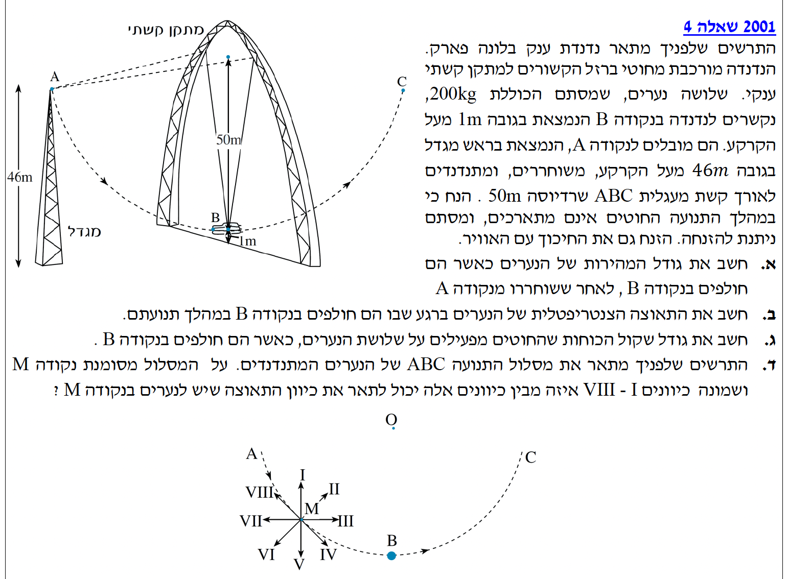
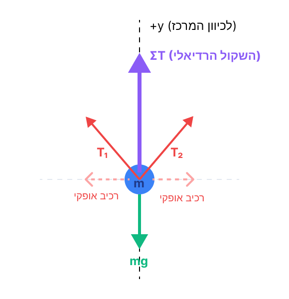
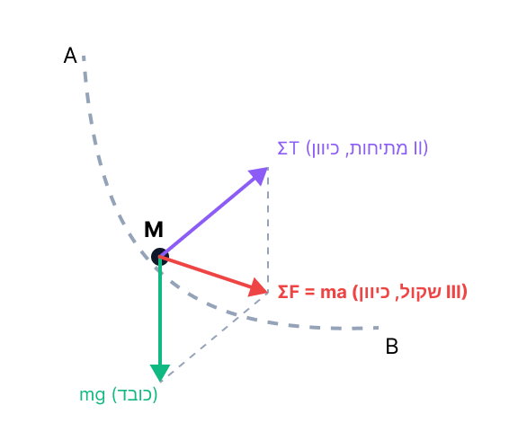

פתרון בגרות בפיזיקה - מכניקה
שנת 2001, שאלה 4: תנועה מעגלית ואנרגיה

תלמידים יקרים, לפנינו שאלה קלאסית המשלבת מספר נושאים מרכזיים במכניקה: שימור אנרגיה, תנועה מעגלית וחוקי ניוטון. נעבוד שלב אחר שלב, נחלץ נתונים, נקפיד על יחידות מידה תקניות (MKS) ונשרטט תרשימי כוחות היכן שצריך. בואו נתחיל!
סעיף א': חישוב גודל המהירות בנקודה B
נרכז את הנתונים ההתחלתיים של המערכת. נשים לב שהמסה, הגבהים והרדיוס נתונים ביחידות תקניות, לכן אין צורך בהמרת יחידות (שלב 0 מבוצע). תאוצת הכובד נקבעת תמיד כ- \( g = 10 \text{ m/s}^2 \).
- מסה כוללת של הנערים: \( m = 200 \text{ kg} \)
- גובה התחלתי בנקודה A: \( h_A = 46 \text{ m} \)
- גובה בנקודה B (הנקודה הנמוכה ביותר): \( h_B = 1 \text{ m} \)
- מהירות התחלתית בנקודה A (שוחררו ממנוחה): \( v_A = 0 \text{ m/s} \)
אנו מחפשים את גודל מהירות הנערים כאשר הם חולפים בנקודה B (נסמן כ- \( v_B \)).
במהלך התנועה, פועלים על הנערים כוח הכובד (כוח משמר) וכוחות המתיחות משני החוטים. עלינו לדייק כאן היטב בתלת-ממד: הנערים מחוברים לשני חוטים, ולכל כוח מתיחות \( \vec{T} \) של כל חוט יש שני רכיבים מרחביים. רכיב אחד הוא רדיאלי המכוון פנימה אל עבר ציר הסיבוב, ורכיב שני הוא אופקי (ימינה או שמאלה) המאונך למישור מעגל התנועה. מכיוון שווקטור המהירות \( \vec{v} \) של הנערים נמצא תמיד במישור התנועה האנכי ומשיק למסלול, גם הרכיב הרדיאלי וגם הרכיב האופקי של המתיחות מאונכים לווקטור ההעתק בכל רגע נתון (\( \vec{T} \perp \vec{v} \)). לכן, העבודה הכוללת שמבצעים שני החוטים היא בהכרח אפס (\( W_{nc} = 0 \)), והאנרגיה המכנית במערכת נשמרת לחלוטין.
התרשים התלת-ממדי הבא ממחיש זאת היטב:
סובבו את המודל הבא כדי לראות את הזוויות במרחב (ניתן לגרור עם העכבר או מגע):
נשתמש בנוסחאות מדף הנוסחאות:
נשווה את האנרגיה המכנית הכוללת בנקודה A לאנרגיה בנקודה B:
נחלק את המשוואה במסה \( m \) (המסה מצטמצמת, מה שמראה שהמהירות אינה תלויה במספר הנערים!):
סעיף ב': התאוצה הצנטריפטלית בנקודה B
ניקח את הנתון שחישבנו מסעיף א', ונוסיף את הרדיוס הנתון בשאלה (שוב, ביחידות תקניות MKS):
- רדיוס המסלול המעגלי: \( r = 50 \text{ m} \) (בשאלות רבות מסומן גם כ- \( R \))
- מהירות משיקית בנקודה B: \( v_B = 30 \text{ m/s} \)
אנו מחפשים את גודל התאוצה הצנטריפטלית (תאוצה רדיאלית) ברגע שהנערים חולפים בנקודה B.
נשתמש בנוסחה הישירה לתאוצה רדיאלית בתנועה מעגלית מתוך דף הנוסחאות:
נציב את הנתונים ישירות אל תוך הנוסחה:
סעיף ג': שקול הכוחות שהחוטים מפעילים בנקודה B
- מסת הנערים: \( m = 200 \text{ kg} \)
- תאוצה רדיאלית כלפי מעלה בנקודה B: \( a_R = 18 \text{ m/s}^2 \) (חושב בסעיף ב')
- תאוצת הכובד: \( g = 10 \text{ m/s}^2 \)
את גודל הכוח השקול שמפעילים החוטים על הנערים בנקודה B. מכיוון שאין כאן חוט אחד אלא מספר חוטים, נסמן את סך כל כוחות המתיחות (שקול המתיחויות) באותיות \( \Sigma T \).
לפני שנציב במשוואה, חובה לשרטט תרשים כוחות (FBD) עבור הנערים בנקודה B. נבחר ציר \( y \) חיובי כלפי מעלה (לכיוון מרכז המעגל).

נרשום את משוואת החוק השני של ניוטון בציר הרדיאלי (ציר y בשרטוט). מכיוון שהגוף בתנועה מעגלית, התאוצה פונה למרכז, ולכן השקול חייב להיות חיובי כלפי מעלה.
נבודד את שקול המתיחויות \( \Sigma T \) ונציב נתונים:
סעיף ד': כיוון וקטור התאוצה בנקודה M
- נקודה M נמצאת על מסלול התנועה ABC, בין נקודת השחרור A לנקודה הנמוכה B.
- הנערים בתנועה כלפי מטה לאורך הקשת (גודל המהירות שלהם גדל).
- נתונה "שושנת כיוונים" עם 8 חצים אפשריים (I עד VIII).
לזהות איזה מבין הכיוונים I-VIII מייצג נכונה את כיוון וקטור התאוצה הכוללת (שקול התאוצות) של הנערים בנקודה M.
על פי החוק השני של ניוטון, כיוון התאוצה השקולה של הגוף זהה תמיד לכיוון הכוח השקול הפועל עליו:
נבחן את הכוחות הפועלים על הגוף (הנערים והקרון) בנקודה M:
- כוחות נורמל (\( N \)): פועלים על הגוף שני כוחות נורמל מהמתקן, שכיוונם המשותף הוא רדיאלי – כלפי מרכז המעגל. בשרטוט, כיוון זה מתאים לחץ II.
- כוח הכובד (\( mg \)): פועל תמיד אנכית כלפי מטה. בשרטוט, כיוון זה מתאים לחץ IV.

הכוח השקול (\( \Sigma\vec{F} \)) הוא למעשה הסכום הווקטורי של כוחות הנורמל (למרכז) וכוח הכובד (למטה). מכיוון שיש לנו רכיב כוח אחד המכוון כלפי מרכז המעגל (כיוון II) ורכיב נוסף המכוון כלפי מטה (כיוון IV), הווקטור השקול בהכרח יימצא ביניהם.
לכן, כיוון הכוח השקול (וכתוצאה מכך, כיוון התאוצה השקולה) לא יכול להיות אך ורק כלפי המרכז וגם לא אך ורק כלפי מטה, אלא חייב להיות כיוון שמשלב את שניהם. הכיוון היחיד שממוקם ביניהם ומוצג בתרשים הוא כיוון III.